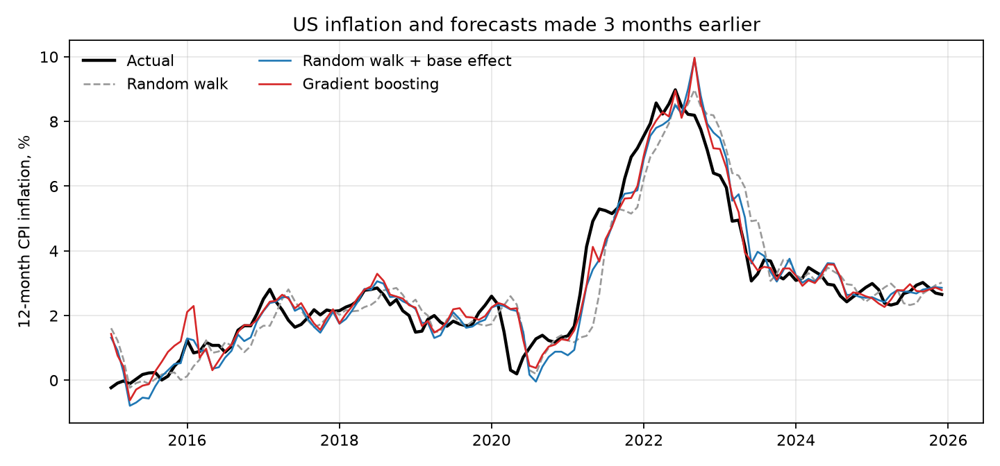
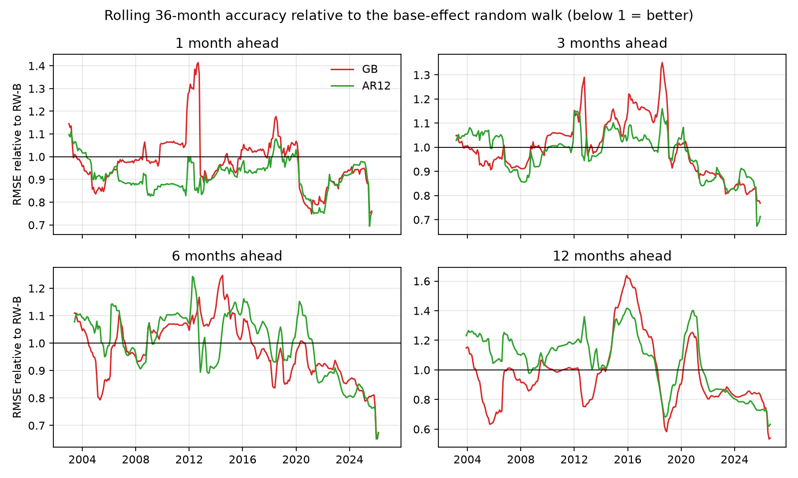

Machine learning models often beat the random walk when forecasting 12-month inflation. Part of that gain needs no learning at all: when the horizon is shorter than a year, the monthly rates that will drop out of the 12-month window are already known, so part of the coming change in 12-month inflation is known today. I call this the base effect and build a benchmark, RW-B, that adds only this arithmetic to the random walk. I compare gradient boosting, random forests, a factor-augmented autoregression and linear autoregressions with RW-B in pseudo out-of-sample forecasts of US CPI inflation from 2000 to 2026, using the full FRED-MD panel of 126 series. The design was written down before the main run. RW-B alone is 20–35% more accurate than the random walk at 1 and 3 months. Gradient boosting looks 15–42% better than the random walk at those horizons, but against RW-B no machine learning model is significantly better in any horizon and period, with one exception: gradient boosting at 3 months after 2020 (relative RMSE 0.86, Holm-adjusted p = 0.006). A linear 12-lag autoregression is just as accurate there (0.86). An apparent 12-month win for machine learning in a smaller exploratory panel (27% better than the linear model, p < 0.001) did not replicate on FRED-MD (4%, p = 0.61). The conclusions are unchanged when the factors are estimated with the standard FRED-MD treatment of outliers and missing values. For US inflation, most of machine learning’s measured edge is the base effect, and forecast comparisons should include a benchmark that knows it.
Can machine learning forecast inflation better than traditional models? A growing literature says yes. Medeiros et al. (2021) found that random forests beat random walk, autoregressive and unobserved-components benchmarks for US inflation using FRED-MD, and Goulet Coulombe et al. (2022) found that nonlinearity is the main reason machine learning helps in macroeconomic forecasting. The random walk of Atkeson and Ohanian (2001), which linear models struggle to beat, is the usual point of comparison.
This paper asks where such a gain can come from when the target is 12-month (year-over-year) inflation, the measure that statistical agencies publish as the headline rate and that central banks target. 12-month inflation is the sum of the last 12 monthly rates. At a horizon of h months, h old monthly rates drop out of the sum and h new ones enter. The old ones are known today. A model that sees the last 12 monthly rates can therefore predict part of the change without learning anything about the future, and the random walk, which ignores them, is a weak benchmark at short horizons. If this is where machine learning’s advantage comes from, the advantage should vanish against a benchmark that uses the same arithmetic, and it should be absent at 12 months, where no base effect is left. Atkeson and Ohanian avoided the problem by comparing windows that do not overlap: their forecast of inflation over the next four quarters is inflation over the past four. Applied to year-over-year inflation at shorter horizons, the same random walk ignores information that is already known.
I first tested machine learning on Kazakhstan’s inflation, where gradient boosting beat the random walk by 10–25% but only 1 of 24 comparisons was significant. With more than 25 years of US forecasts the tests have more power, so this paper moves to the United States.
The contributions are:
Stock and Watson (1999) found that Phillips-curve models helped forecast US inflation, but Atkeson and Ohanian (2001) showed that from 1984 on a random walk, which forecasts inflation over the next four quarters with inflation over the past four, was as accurate as these models. Stock and Watson (2007) explained this with an unobserved-components model with stochastic volatility, in which the predictable part of inflation became small after the mid-1980s. Ang, Bekaert and Wei (2007) found that surveys forecast US inflation better than time-series, Phillips-curve and term-structure models. In a broad comparison, Faust and Wright (2013) concluded that judgmental forecasts do best and that good forecasts must account for a slowly varying local mean.
Factor models were the first way to use large panels. Stock and Watson (2002a, 2002b) summarized many predictors with a few principal components, Bai and Ng (2002) proposed criteria for choosing the number of factors, and Bai and Ng (2008) built factors from targeted predictors. McCracken and Ng (2016) built FRED-MD, which became the standard US panel for this work. Inoue and Kilian (2008) found that bagging was about as accurate as or more accurate than factor models, shrinkage and model averaging for US CPI inflation, and Kim and Swanson (2018) compared factor, machine learning and shrinkage methods across US macroeconomic variables. Medeiros et al. (2021) found that random forests systematically beat the benchmarks for US CPI inflation from 1990 to 2015, and Goulet Coulombe et al. (2022) found that nonlinearity is the main reason machine learning helps. Neural networks have also been applied to US inflation (Almosova and Andresen, 2023; Barkan et al., 2023), and Goulet Coulombe (2024) used a random forest to let the coefficients of a linear macroeconomic model change over time.
Studies differ in what they forecast. Atkeson and Ohanian (2001) and Stock and Watson (1999) forecast inflation over the next h periods. Medeiros et al. (2021) forecast monthly inflation and inflation accumulated over the next 3, 6 and 12 months, with a random walk that uses inflation over the past h months. These targets do not overlap with data that are already known, so the base effect does not arise. When the target is year-over-year inflation h < 12 months ahead, the target window overlaps with months already observed, and a model that sees the last 12 monthly rates gains over a random walk without forecasting anything new. Iterated forecasts of monthly inflation, which Marcellino, Stock and Watson (2006) compared with direct forecasts, use this arithmetic automatically. Direct models of the 12-month rate, including the tree models here, have to learn it. I have not found a study that measures how much of machine learning’s measured advantage this effect explains, and the RW-B benchmark of Section 3 is designed to do that.
This paper uses the Diebold and Mariano (1995) test with Newey and West (1987) variance and a Holm (1979) correction. Several extensions are relevant. Clark and West (2007) adjust the test for nested models, Hansen, Lunde and Nason (2011) propose the model confidence set for comparing many models at once, Giacomini and White (2006) test conditional predictive ability, and Giacomini and Rossi (2010) and Rossi (2013) show how forecast rankings can change over time. Section 6 discusses these as next steps.
Let m(t) be the monthly inflation rate and π(t) ≈ m(t−11) + … + m(t) the 12-month rate. Then h months ahead
π(t+h) − π(t) ≈ [m(t+1) + … + m(t+h)] − [m(t−11) + … + m(t+h−12)].
The first bracket is unknown. The second, which I call the base effect B(t,h), is known at time t. The RW-B benchmark keeps the random walk but subtracts B and assumes the coming months will equal the average monthly rate of the last 12 months, m̄(t):
RW-B: π̂(t+h) = π(t) − B(t,h) + h · m̄(t).
RW-B has no parameters to estimate. At h = 12 the base effect covers the whole window, B equals π(t) and RW-B reduces to the random walk. This gives a built-in check: if a model’s advantage is the base effect, its gain over RW-B should be small at 1–6 months, and at 12 months RW-B is no harder to beat than the random walk.
The main data are the October 2026 vintage of FRED-MD (McCracken and Ng, 2016): 126 monthly US series from January 1959 to September 2026, made stationary with the FRED-MD transformation codes. The target is 12-month CPI inflation (CPIAUCSL). CPI for October 2025 is missing in this vintage, so monthly rates and their lags are undefined after September 2025. The last forecast origin is therefore September 2025, and the forecasts cover target months from early 2000 to between September 2025 (h = 1) and September 2026 (h = 12).
Before FRED-MD could be downloaded I ran the same code on an exploratory panel of 21 series from DBnomics (CPI and its components, producer prices, oil and natural gas, labour market, interest rates, M2, industrial production and exchange rates, through January 2025). Those runs shaped the design and are reported only as exploratory.
| Model | Type | Inputs |
|---|---|---|
| RW | benchmark | π(t) (Atkeson and Ohanian, 2001) |
| RW-B | benchmark | π(t) minus the base effect plus h months at the recent average (Section 3) |
| AR | linear | π(t) and the last 3 monthly rates |
| AR12 | linear | π(t) and the last 12 monthly rates; predicts the change π(t+h) − π(t) |
| FAAR | linear | AR plus 5 principal-component factors from the panel (Stock and Watson, 2002b) |
| GB | machine learning | gradient boosted trees (Friedman, 2001) on π(t) and the last 12 monthly rates |
| GB+X | machine learning | GB plus oil prices, the federal funds rate, M2 and three exchange rates, each as 1-, 3- and 12-month changes |
| GB+F | machine learning | GB plus the 5 factors |
| RF+F | machine learning | random forest (Breiman, 2001) on the same inputs as GB+F |
| AVG | combination | average of AR and GB+F |
The tree models predict the change π(t+h) − π(t), which is added back to π(t). In a first run they predicted the level and were two to three times worse than the random walk at one month, because trees cannot add up 12 monthly rates or extrapolate beyond the training range. Gradient boosting uses 300 trees of depth 2, learning rate 0.03 and subsampling 0.8. The random forest uses 300 trees, a minimum leaf size of 5 and half the inputs per split. These settings were chosen once and never tuned.
The factors are the first 5 principal components of the standardized panel, re-estimated at every refit on data up to the forecast origin. Series with more than 10% missing values in the window are dropped, and remaining gaps are filled with the window mean. This simple step was fixed in advance. Section 5.5 repeats the analysis with the factor step of McCracken and Ng (2016).
Forecasts are pseudo out-of-sample with an expanding window: training starts in 1962, the first forecast origin is January 2000, and all models are refit every 3 months using only data available at the origin. Horizons are 1, 3, 6 and 12 months. Accuracy is the root mean squared error (RMSE) relative to a benchmark, reported for target months in 2000–07, 2008–19 and 2020–26. Differences are tested with the Diebold and Mariano (1995) test with Newey–West variance and h − 1 lags. In comparisons with RW-B, p-values are adjusted with the Holm (1979) correction across the 8 models in each horizon and period. A model counts as significantly better if its relative RMSE is below 1 and its adjusted p-value is below 0.05.
The question, benchmarks, measures and model settings were written down (DESIGN.md in the repository) after the exploratory runs and before the FRED-MD run, and the FRED-MD run was done once. Nothing was changed after seeing its results.
| Horizon | 2000–07 | 2008–19 | 2020–26 |
|---|---|---|---|
| 1 month | 0.65 (<0.001) | 0.73 (0.011) | 0.66 (0.002) |
| 3 months | 0.75 (0.016) | 0.80 (0.064) | 0.70 (0.020) |
| 6 months | 0.87 (0.068) | 0.88 (0.102) | 0.80 (0.046) |
| 12 months | 1.00 | 1.00 | 1.00 |
RW-B is 20–35% more accurate than the random walk at 1 and 3 months, and the gain is significant in five of these six cells. The gain shrinks with the horizon, as the arithmetic predicts. For comparison, gradient boosting’s RMSE relative to the random walk is 0.65, 0.76 and 0.58 at 1 month and 0.71, 0.85 and 0.61 at 3 months in the three periods: close to RW-B, and taken at face value a large machine learning win.
| Horizon | Period | AR12 | FAAR | GB | GB+X | GB+F | RF+F |
|---|---|---|---|---|---|---|---|
| 1 month | 2000–07 | 0.94 | 1.51 | 1.00 | 0.96 | 1.04 | 1.05 |
| 2008–19 | 0.90 | 1.32 | 1.04 | 0.97 | 1.00 | 1.08 | |
| 2020–26 | 0.87 | 1.66 | 0.87 | 0.94 | 0.91 | 1.00 | |
| 3 months | 2000–07 | 0.94 | 1.34 | 0.95 | 1.00 | 1.02 | 1.06 |
| 2008–19 | 1.01 | 1.29 | 1.06 | 1.03 | 1.14 | 1.11 | |
| 2020–26 | 0.86 | 1.80 | 0.86 | 1.11 | 1.10 | 1.06 | |
| 6 months | 2000–07 | 1.03 | 1.22 | 0.99 | 0.98 | 1.04 | 1.01 |
| 2008–19 | 1.08 | 1.25 | 1.06 | 0.99 | 1.18 | 1.15 | |
| 2020–26 | 0.85 | 1.50 | 0.87 | 1.11 | 1.01 | 1.05 | |
| 12 months | 2000–07 | 1.18 | 1.19 | 1.01 | 0.92 | 1.13 | 0.98 |
| 2008–19 | 1.14 | 1.34 | 1.03 | 0.97 | 0.98 | 0.96 | |
| 2020–26 | 0.82 | 1.06 | 0.83 | 0.89 | 0.86 | 0.92 |
Once the benchmark knows the base effect, machine learning is no longer clearly better (Table 3). Out of 60 machine learning cells (5 models including AVG, 4 horizons, 3 periods), only one is significantly better than RW-B: gradient boosting at 3 months after 2020 (0.86, adjusted p = 0.006). The linear AR12 has exactly the same relative RMSE in that cell (0.86, adjusted p = 0.21), and Figure 2 shows the two models moving closely together after 2020. The gain after 2020 comes from using recent inflation dynamics during the 2021–23 surge, which a linear model does as well as boosting. It is not specific to machine learning.
Figure 1 shows the same point directly: the gradient boosting forecast and the RW-B forecast lie almost on top of each other, and both react to turning points earlier than the random walk, which by construction lags them by 3 months.

At 12 months there is no base effect, so this is where machine learning would have to show real skill. In the exploratory 21-series panel, GB+F was 27% more accurate than AR12 at 12 months in 2000–07 (relative RMSE 0.73, p < 0.001). On FRED-MD the same comparison gives 0.96 (p = 0.61), and 0.86 (p = 0.27) and 1.04 (p = 0.50) in the later periods. Gradient boosting alone does beat AR12 at 12 months in 2000–07 (0.85, unadjusted p = 0.015), but only because AR12 is itself 18% worse than the random walk there. Against the random walk, gradient boosting is 1.01. No model is significantly better than the random walk at 12 months in any period after the Holm correction.

The factor-augmented models did not gain from the 126 series. FAAR is worse than RW-B in every cell, significantly so at 1 month in 2000–07, and worse than the plain AR in 8 of 12 cells. GB+F is generally no better than GB. The named drivers in GB+X (oil, interest rates, money and exchange rates) give small gains of 1–11% over RW-B in some cells, none of them significant, and make gradient boosting worse at 3 and 6 months after 2020 (1.11 against 0.86 and 0.87). The factor step is deliberately simple, so this result is about these factors, not about the information in FRED-MD in general (Section 6).
The pre-specified factor step is simple, so I repeated the whole FRED-MD run with the treatment recommended by McCracken and Ng (2016). Values more than 10 interquartile ranges from a series’ median are set to missing. Missing values are filled by the EM algorithm of Stock and Watson (2002b): start from the mean, estimate 5 factors, replace the missing values with the common component, and repeat until the fill stops changing. Factors for months with gaps, including the most recent months, are estimated by least squares on the observed series. As before, every statistic uses only data up to the forecast origin. This keeps all 126 series instead of about 122, and removes 22 outliers in the window ending in 2000 and 162 in the window ending in 2025, 80 of them in 2020–21.
| Horizon | FAAR simple | FAAR FRED-MD | GB+F simple | GB+F FRED-MD | GB (no factors) |
|---|---|---|---|---|---|
| 1 month | 1.66 | 1.40 | 0.91 | 0.92 | 0.87 |
| 3 months | 1.80 | 1.41 | 1.10 | 0.97 | 0.86 |
| 6 months | 1.50 | 1.15 | 1.01 | 0.96 | 0.87 |
| 12 months | 1.06 | 0.88 | 0.86 | 0.86 | 0.83 |
The better factor step matters after 2020. The extreme values of the pandemic months distorted the simple factors: with the FRED-MD step, FAAR’s error falls by 16–23% and GB+F’s by up to 12% (Table 4). Before 2020 the two factor steps give almost identical results (differences of at most 0.04). The main conclusions do not change. Gradient boosting at 3 months after 2020 is still the only model significantly better than RW-B. GB+F is still no better than GB without factors, and the factor models still lose to RW-B at short horizons. The 12-month comparison of GB+F with AR12 in 2000–07 is 0.95 (p = 0.58), against 0.96 with the simple factors. The weak factor results are therefore not caused by the outlier and missing-value treatment.
The main finding is that, for US 12-month inflation, the headline “machine learning beats the random walk” is mostly the base effect. A comparison with a benchmark that knows the base effect changes the answer from a large machine learning win to no significant gain, except in one cell where a linear model does equally well. This does not show that machine learning cannot forecast inflation. It shows that a random walk is the wrong benchmark for judging it at horizons below 12 months, and that a fair benchmark costs one line of arithmetic.
These results do not contradict Medeiros et al. (2021). Their targets do not overlap with known data, their sample ends in 2015, and their models forecast monthly inflation rather than the 12-month rate. The finding here is narrower: for year-over-year inflation, a random walk exaggerates machine learning’s advantage, and a benchmark with the base effect removes most of it. Whether random forests beat RW-B when they forecast monthly rates that are then added up is a natural next test.
The results have clear limits:
Next steps are: real-time FRED-MD vintages; targeted predictors and a data-driven number of factors and tuned models tested on a hold-out period; survey inflation expectations and neural networks; and the same base-effect test for Kazakhstan and the United Kingdom.
All code is in Python and every number in this draft can be reproduced from the repository: github.com/romagoat10/us-inflation-ml. The pre-specified design is in DESIGN.md, and the exploratory runs are kept in results/levels and results/change.
All experiments are listed in the order they were run, so the reader can see which results shaped the design and which tested it. Experiments 1–4 are exploratory. Experiment 5 was pre-specified and run once. Experiment 6 is a robustness check added afterwards. Details are in EXPERIMENTS.md in the repository.
| # | Experiment | Why | Main finding | Led to |
|---|---|---|---|---|
| 0 | Kazakhstan pilot | First test of the idea | GB beats RW by 10–25%, but 1 of 24 comparisons is significant | Move to the US for more power |
| 1 | Trees predict the level (21 series) | Simplest US setup | Trees 2–3 times worse than RW at 1 month | Predict the change instead |
| 2 | Trees predict the change | Fix experiment 1 | 20–45% better than RW at 1–3 months | Gains look too good: add a fair linear model |
| 3 | Linear AR12 check | Same inputs, no machine learning | AR12 as accurate as trees at 1–6 months | Hypothesis: the gain is the base effect |
| 4 | RW-B benchmark | Measure the base effect | RW-B 20–35% better than RW; no model beats it before 2020 | Write the design (DESIGN.md) |
| 5 | Confirmatory FRED-MD run | Test the design on new data, once | Only GB at 3 months after 2020 beats RW-B, AR12 equal; 12-month win does not replicate | Main result; concern about the factor step |
| 6 | FRED-MD factor step | Answer that concern | Factor models improve after 2020; conclusions unchanged | Factor results are not caused by the treatment of outliers |